GIF 循环播放：红色高亮是发力肌群。全徒手，只需地面和一段台阶。
每周 3 次 · 无器械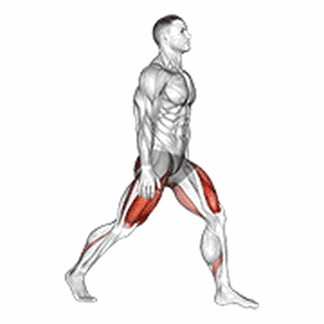
后脚搭长椅或看台台阶（没有就把后脚放低一点做分腿蹲）。前腿下蹲到大腿接近平行，重心压前腿，后腿只做稳定。
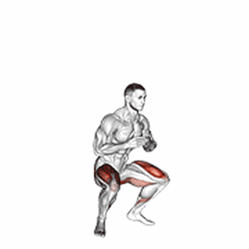
蹲到大腿平行或更低，底部停 2 秒再起。慢是核心——同样 12 次，慢做的刺激等于快做的 3 倍。
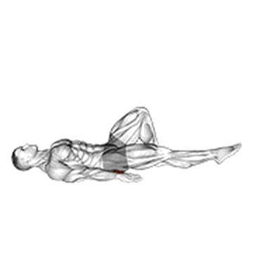
仰卧屈膝，一条腿伸直抬起，用支撑腿臀部顶髋，顶端停 2 秒。臀部发力，别用腰代偿。
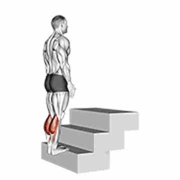
前脚掌站在台阶边缘，脚跟下沉到低于台阶，再发力顶到最高。小腿力量直接关系到落地缓冲。
热身 4 分钟：高抬腿 → 髋绕环 → 活动脚踝 → 空身蹲 15 次。力量做完直接接 6 km 轻松跑。
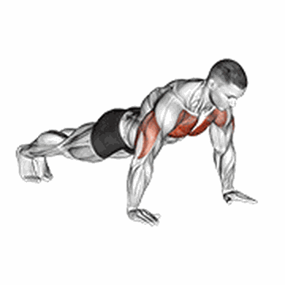
手略宽于肩，身体成一条直线，肘部约 45° 下放到胸口接近地面。做不满 8 个先退回上斜（手撑台阶）。
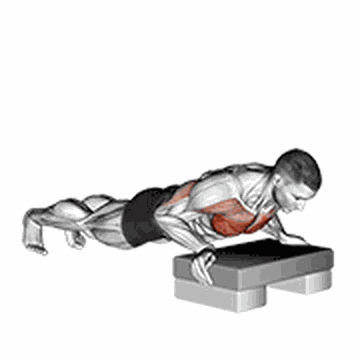
手撑台阶或长椅，越高越简单。俯卧撑做不满时用这个把组数补齐。
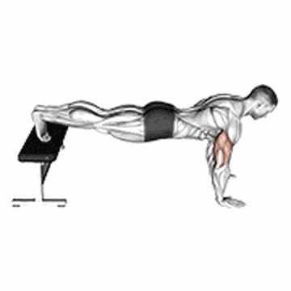
脚垫高 = 更多上胸和肩部负荷。标准俯卧撑能轻松做 15 个后，换这个。
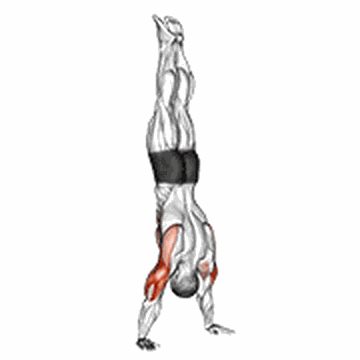
弯腰、臀部抬高，身体成倒 V 形，头往地面下压再推起。没有哑铃时，这是最好的肩部推举替代。
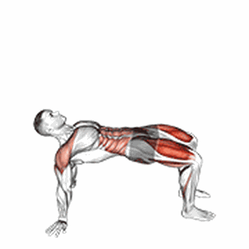
坐地撑起身体成反弓形，臀和背等长发力。练背和臀，跑者防含胸用得上。
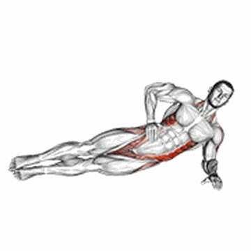
侧卧单肘支撑，髋部顶起成斜线，身体不塌不翘。练侧向稳定，跑步抗旋转。
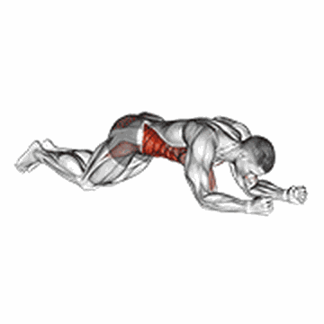
标准平板基础上，交替抬手摸对侧肩。核心抗旋转，比静态平板更能练到跑姿需要的稳定。
补背：俯卧 Y-T-W 抬臂（趴地，手臂分别摆成 Y、T、W，各 12 次 × 3 轮）。没单杠时这是替代划船的动作。
踩上台阶后单腿发力站起（或用提膝版）。单侧承重是没负重时最好的强度来源。
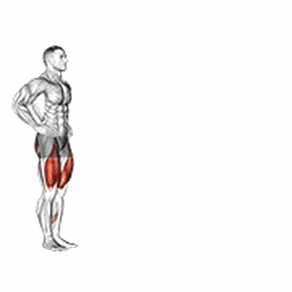
向前跨一大步，后膝下沉接近地面，前脚发力起身。控制节奏，别靠惯性甩。
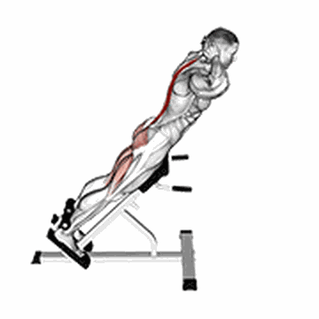
俯卧，手放耳侧，用臀和背把上身抬起，停 1 秒缓慢放下。练竖脊肌和臀，替代无器械时的硬拉。
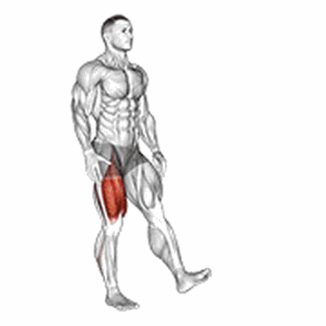
手枪蹲难度较高，蹲不下去就手扶固定物做。作为进阶选项，不是必做。
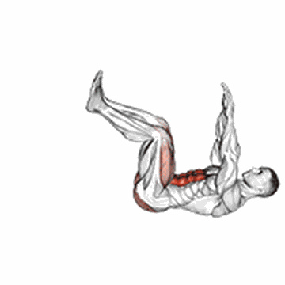
仰卧，手脚交替伸展，腰始终贴地。练核心稳定性，收腰效果比卷腹好。
这一天定位是「次重、不追求力竭」，给周一的腿留恢复空间。做完接 6 km 轻松跑。